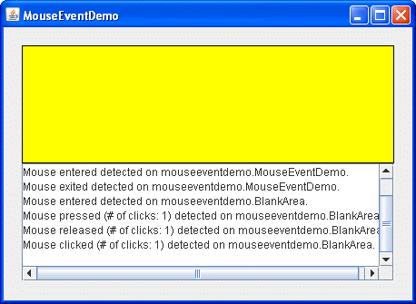

Lección: Escribiendo Listener Events
Sección: Implementando Listeners para los Eventos Comunmente Manejados
Cómo Escribir un Mouse Listener
Los eventos de ratón se notifican cuando el usuario utiliza el ratón (o un dispositivo de entrada similar) para interactuar con un componente. Los eventos de ratón ocurren cuando el cursor entra o sale del área en pantalla de un componente y cuando el usuario presiona o libera uno de los botones del ratón.
Monitorizar el movimiento del cursor implica una sobrecarga del sistema significativamente mayor que el seguimiento de otros eventos del ratón. Por esto es por lo que los eventos de movimiento del ratón se separan por el tipo de mouse motion listener (vea Cómo Escribir un Mouse-Motion Listener).
Para monitorizar los eventos de rueda del ratón, puede registar un mouse-wheel listener. Vea Cómo Escribir un Mouse Wheel Listener para más información.
Si una aplicación requiere la detección de de los eventos de ratón y de los eventos de movimiento-del-ratón,
use la clase
MouseInputAdapter. Esta clase implementa
MouseInputListener, un interfaz conveniente que implementa los interfaces
MouseListener y MouseMotionListener. Sin embargo, el interfaz
MouseInputListener no implementa el interfaz MouseWheelListener.
Alternativamente, use la clase AWT
MouseAdapter corresponediente, la cual implementa los interfaces
MouseListener, MouseMotionListener, y MouseWheelListener.
El ejemplo siguiente muestra un mouse listener. En lo alto d ela ventana hay un área en blanco (implementada
por una clase llamada BlankArea). El mouse listener monitoriza los eventos tanto en
BlankArea como en su contenedor, una instancia de MouseEventDemo. Cada vez que un
evento del ratón ocurre, un mensaje descriptivo se muestra bajo el área en blanco. Moviendo el cursor encima
del área en blanco y presionando los botones del ratón ocasionalmente, puede disparar eventos del ratón.

Intente esto:
-
Pulse el botón Lanzar para ejecutar MouseEventDemo usando
Java™ Web Start (
descargue KDJ 7 o posterior
). Alternativamente, para compilar y ejecutar el ejemplo por sí mismo, consulte el
índice de ejemplos.

-
Mueva el cursor dentro del rectángulo amarillo en lo alto de la ventana.
Verá uno o más eventos de ratón-entrante. -
Presione y manetenga pulsado el botón izquierdo del ratón sin moverlo.
Verá un evento de ratón-presionado. Podría ver algunos eventos extra del ratón, tales como ratón-saliente y ratón-entrante. -
Suelte el botón del ratón.
Verá un evento ratón-soltado. Si no movió el ratón, le seguirá un evento de ratón-pulsado. -
Presione y mantenga pulsado el botón del ratón de nuevo, y entonces arrastre el ratón de forma que el
cursor acabe fuera de la ventana. Suelte el botón del ratón.
Verá un evento de ratón-presionado, seguido por un evento de ratón-saliente, seguido por un evento de ratón-liberado. No se le notifica el movimiento del cursor. Para obtener los eventos de movimiento del ratón, necesita implementar un mouse-motion listener.
Puede encontrar el código de la demostración en
MouseEventDemo.java y
BlankArea.java. Aquí está el código de la gestión del evento del ratón de la demostración:
public class MouseEventDemo ... implements MouseListener {
//where initialization occurs:
//Register for mouse events on blankArea and the panel.
blankArea.addMouseListener(this);
addMouseListener(this);
...
public void mousePressed(MouseEvent e) {
saySomething("Mouse pressed; # of clicks: "
+ e.getClickCount(), e);
}
public void mouseReleased(MouseEvent e) {
saySomething("Mouse released; # of clicks: "
+ e.getClickCount(), e);
}
public void mouseEntered(MouseEvent e) {
saySomething("Mouse entered", e);
}
public void mouseExited(MouseEvent e) {
saySomething("Mouse exited", e);
}
public void mouseClicked(MouseEvent e) {
saySomething("Mouse clicked (# of clicks: "
+ e.getClickCount() + ")", e);
}
void saySomething(String eventDescription, MouseEvent e) {
textArea.append(eventDescription + " detected on "
+ e.getComponent().getClass().getName()
+ "." + newline);
}
}
La IPA de Mouse Listener
| Método | Propósito |
|---|---|
| mouseClicked(MouseEvent) | Llamada justo después de que el usuario pulse en el componente monitorizado. |
| mouseEntered(MouseEvent) | Llamada justo después de que el cursor entre en los límites del componente monitorizado. |
| mouseExited(MouseEvent) | Llamada justo después de que el cursor salga de los límites del componente monitorizado. |
| mousePressed(MouseEvent) | Llamada justo después de que el usuario presione un botón del ratón mientras el cursor está sobre el componente monitorizado. |
| mouseReleased(MouseEvent) | Llamada justo después de que el usuario suelte un botón del ratón después de una pulsación del ratón sobre el componente monitorizado. |
La clase
MouseAdapter
(la clase adaptadora AWT) es abstracta. Todos sus métodos tienen un cuerpo vacío. De forma que un
desarrollador puede definir métodos para eventos específicos de la aplicación. Puede también usar la clase
MouseInputAdapter
, la cual tiene todos los métodos disponibles desde MouseListener y
MouseMotionListener.
| Método | Propósito |
|---|---|
| int getClickCount() | Devuelve el número de las pulsaciones rápidas consecutivas que el usuario ha hecho (incluyendo este evento). Por ejemplo, devuelve 2 para una doble pulsación. |
|
int getX()
int getY() Point getPoint() |
Devuelve la posición (x,y) en la cual ocurrió el evento, relativa al componente que disparó el evento. |
|
int getXOnScreen()
int getYOnScreen() int getLocationOnScreen() |
Devuelve la posición absoluta (x,y) del evento. Estas coordinadas son relativas al sistema virtual de coordenadas para un entorno multi-pantalla. De otra forma, estas coordenadas son relativas al sistema de coordenadas asociado con la Configuración de Gráficos del Componente. |
| int getButton() |
Devuelve que botón del ratón, si hay alguno, que ha cambiado su estado. Se devuelve una de las
siguientes constantes: NOBUTTON, BUTTON1, BUTTON2, o
BUTTON3.
|
| boolean isPopupTrigger() |
Devuelve true si el evento del ratón causara que un menú emergente apareciera. Debido a
que los activadores emergentes dependen de la plataforma, si su programa utiliza menús emergentes, debe
llamar a isPopupTrigger para todos los eventos presionados y liberados del mouse activados
por componentes sobre que puede aparecer la ventana emergente. Vea
Abrir un Menú Emergente para más información sobre los
menús emergentes.
|
| String getMouseModifiersText(int) |
Devuelve un String describe las teclas modificadores y los botones de ratón que estuvieron
activos durante el evento, tales como "Mayúsculas", o "Control + Mayúsculas".
Estas cadenas pueden ser traducidas usando el fichero awt.properties.
|
La clase MouseEvent hereda muchos métodos útiles desde las clases
InputEvent y un par de métodos prácticos desde
ComponentEvent y
AWTEvent.
| Método | Propósito |
|---|---|
|
int getID()
(en java.awt.AWTEvent)
|
Devuelve el tipo de evento, el cual define la acción particular. Por ejemplo, el id de MouseEvent
refleja el estado de los botones del ratón para cada evento del ratón. Los estados siguientes podrían
ser especificados por el id de MouseEvent: MouseEvent.MOUSE_PRESSED,
MouseEvent.MOUSE_RELEASED, y MouseEvent.MOUSE_CLICKED.
|
|
Component getComponent()
(en ComponentEvent)
|
Devuelve el componente que disparó el evento. Puede usar este método en vez del método
getSource.
|
| int getWhen() | Devuelve la marca de tiempo de cuando ocurrió el evento. Cuanto mayor sea la marca de tiempo, más recientemente ocurrió el evento. |
|
boolean isAltDown()
boolean isControlDown() boolean isMetaDown() boolean isShiftDown() |
Devuel el estado de las teclas modificadoras individuales en el momento en el que el evento se disparó. |
| int getModifiers() |
Devuelve el estado de todas las teclas modificadoras y los botones del ratón cuando se disparó el
evento. Puede usar este método para determinar qué botón del ratón fue presionado (o liberado) cuando
se disparó el evento de ratón. La clase InputEvent define estas constantes para usar con
el método getModifiers: ALT_MASK, BUTTON1_MASK,
BUTTON2_MASK, BUTTON3_MASK, CTRL_MASK, META_MASK,
y SHIFT_MASK. Por ejemplo, la expresión siguiente es verdadera si se presionó el botón
derecho:
(mouseEvent.getModifiers() & InputEvent.BUTTON3_MASK)
== InputEvent.BUTTON3_MASK
|
| int getModifiersEx() |
Devuelve la máscara de modificadores extendida para este evento. Los modificadores extendidos
representan el estado del botón del ratón y todas las teclas modales, tales como ALT, CTRL, META, justo
después de que ocurra el evento. Puede comprobar el estado de los modificadores usando una de las
siguientes máscaras de bits predefinidas: SHIFT_DOWN_MASK, CTRL_DOWN_MASK,
META_DOWN_MASK, ALT_DOWN_MASK, BUTTON1_DOWN_MASK,
BUTTON2_DOWN_MASK, BUTTON3_DOWN_MASK, o ALT_GRAPH_DOWN_MASK. Por
ejemplo, para comprobar que se pulsa el botón 1, pero que los botones 2 y 3 no, debería usar el
siguiente trozo de código:
if (event.getModifiersEx() & (BUTTON1_DOWN_MASK |
BUTTON2_DOWN_MASK |
BUTTON3_DOWN_MASK)
== BUTTON1_DOWN_MASK) {
...
}
|
| int getModifiersExText(int) | Devuelve una cadena describiendo las teclas modificadoras extendidas y los botones de ratón, tales como "Shift", "Button1", o "Ctrl+Shift". Estas cadenas pueden ser traducidas cambiando el fichero awt.properties. |
La clase
MouseInfo ofrece métodos para obtener información sobre la ubicación del puntero del ratón
en cualquier momento mientras se ejecuta la aplicación.
| Método | Propósito |
|---|---|
| getPointerInfo() |
Returns a PointerInfo instance that represents the current location of the mouse pointer.
|
| getNumberOfButtons() |
Devuelve el número de botones del ratón o -1 , si un sistema no soporta el ratón.
|
Ejemplos que Usan Mouse Listeners
La tabla siguiente lista los ejemplos que usan mouse listeners.
| ejemplo | Dónde Está Descrito | Notas |
|---|---|---|
MouseEventDemo
|
Esta Sección | Informa de todos los eventos del ratón que ocurren dentro de un panel en blanco para demostrar las circunstancias bajo las cuales los eventos de ratón se dispararon. |
GlassPaneDemo
|
Cómo Usar los Paneles Raíz |
Usa una subclase de MouseInputAdapter para monitorizar eventos del ratón y eventos de
movimiento del ratón en el panel de cristal del panel raíz. Re-envía los eventos a los componentes
subyacentes.
|
TableSortDemo
|
Cómo Usar Tablas | Monitoriza los eventos del ratón en una cabecera de la tabla. Ordena los datos en la columna seleccionada. |
PopupMenuDemo
|
Cómo Usar Menus | Muestra un menú emergente en respuesta a las pulsaciones del ratón. |
TrackFocusDemo |
Cómo Usar el Subsistema de Foco |
El componente personalizado, Picture, implementa un mouse listener que solicita el foco
cuando el usuario pulsa sobre el componente.
|